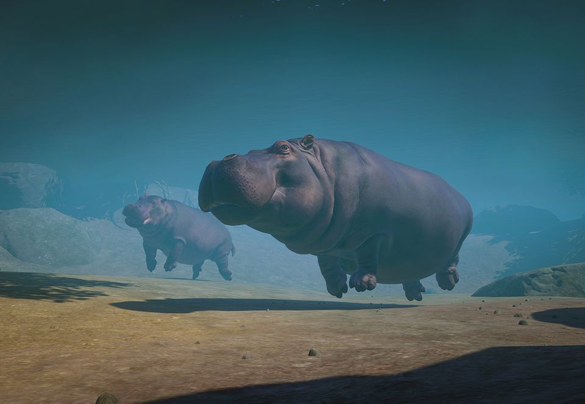

Hipopotam
(Hippopotamus amphibius)
Narażone
Wielkość populacji na wolności: Od 125 000 do 150 000
Hipopotam nilowy (Hippopotamus amphibius) to duży ssak zamieszkujący rzeki Afryki Subsaharyjskiej. Są to duże zwierzęta ziemno-wodne wyróżniające się długimi, wysuniętymi do przodu, zębami, nozdrzami na górnej części pyska, niewielkimi
uszami i grubą, szarobrązową skórą. Samce osiągają długość od 4 do 5 m i ważą pomiędzy 1500 a 2000 kg, natomiast samice dorastają do 3,3-4,2 m długości i ważą od 1000 do 1500 kg.
Hipopotamy muszą zmagać się z wieloma zagrożeniami. Głównym zagrożeniem jest dla nich utrata siedlisk, konflikty terytorialne z ludźmi oraz myśliwi. Kłusownicy polują na przedstawicieli tego gatunku, aby zdobyć ich mięso oraz zęby. Wiele
obszarów zamieszkiwanych przez hipopotamy jest oficjalnie pod ochroną, ale wyegzekwowanie tego prawa nastręcza trudności i niektóre tereny zupełnie nie są chronione. Aby zapewnić hipopotamom przetrwanie, niezbędne jest kontynuowanie działań
mających na celu zachowanie tego gatunku.
| Kontynenty | Regiony | Biomy |
|---|---|---|
| Afryka | Afryka Subsaharyjska, wszystkie kraje |   |
| Wielkość grupy (bez młodych osobników) |
3-30 (maks. 1 samiec, samice do 29) |
|---|---|
| Wielkość grupy kawalerskiej samców (bez młodych osobników) |
3 |
| Wielkość grupy kawalerskiej samic (bez młodych osobników) |
3-30 |
| Hierarchia dominacji | Dominacja samców |
| Strategia rozrodcza | Poligynia; dominujący samiec parzy się z samicami ze swojego haremu. |
| Zasady dotyczące dojrzałości | Stadność: całe dojrzałe potomstwo jest tolerowane w grupie |
| Stosunek do człowieka | Ufność |
| Wielkość |
 4,50 m długości 4,50 m długości  3,75 m długości 3,75 m długości |
|---|---|
| Długość życia |
51 lat 51 lat |
| Waga |
1750 kg 1250 kg |
| Wiek dojrzałości płciowej | 6 lat |
|---|---|
| Wiek zakończenia okresu reprodukcyjnego | Według danych szacunkowych 40 lat |
| Liczba młodych przypadająca na okres godowy | 1 |
| Długość ciąży/inkubacji | 8 mies. |
| Okres międzyurodzeniowy | 24 mies. |
| Rozmnażanie w niewoli | Łatwe |
Potrzeby społeczne
Hipopotamy wchodzą w interakcje z przedstawicielami swojego gatunku, ale nie żyją w grupach ani nie tworzą silnych więzi. Dojrzałe samce prowadzą po części samotniczy tryb życia przejawiają zachowania terytorialne, obejmując panowanie nad wybranym odcinkiem rzeki i pozwalając samicom (oraz samcom z którymi nie rywalizują) mieszkać na tym obszarze. Samice wybierają miejsce do życia, kierując się jakością siedliska, przez co tworzą większe grupy w atrakcyjniejszych częściach rzeki. W wodzie hipopotamy zachowują się wobec siebie przyjaźnie, ale na ladzie bywają agresywne, szczególnie kiedy żerują.
Rozmnażanie
Samce hipopotamów zamieszkujące lepsze terytoria mają większe szanse na znalezienie partnerki, ponieważ zwiększa się prawdopodobieństwo, że samice zdecydują się na życie właśnie na tym odcinku rzeki. Samce rozpoznają samicę gotową do rozrodu węchem, po czym podążają za nią i nawołują ją, aż pozwoli na zbliżenie. Hipopotamy parzą się pod wodą, a jedyną częścią ciała widoczną wtedy ponad powierzchnią są często nozdrza samicy. Po ośmiu miesiącach od spółkowania samica rodzi w wodzie jedno młode, które wypływa na powierzchnię, by zaczerpnąć pierwszy oddech. Młode pozostają przy matce aż do 5-7 roku życia, po czym opuszczają ją, aby znaleźć własny teren z dala od osobników, z którymi są spokrewnione.
Ciekawostki
- Najbliżej spokrewnione z hipopotamami wśród żyjących obecnie gatunków są wieloryby i delfiny.
- Skóra hipopotama ma 6 cm grubości i wydziela czerwoną substancję, która działa jak filtr chroniący przed promieniami słońca.
- Hipopotamy są w stanie tak rozewrzeć paszczę, że szczęki tworzą kąt 150 stopni. Takie „ziewanie” jest zwykle przejawem agresji.
- Hipopotamy mają bardzo duże zęby. Ich kły mogą osiągać długość nawet 50 cm.
- Hipopotamy przebywają w ciągu dnia w wodzie, chłodząc się, a nocą wychodzą na ląd, by żerować wśród traw. Mogą przebyć w tym celu nawet 5 km, a zanim wyruszą, pozostawiają odchody, aby móc znaleźć drogę powrotną do wody, kierując się węchem.